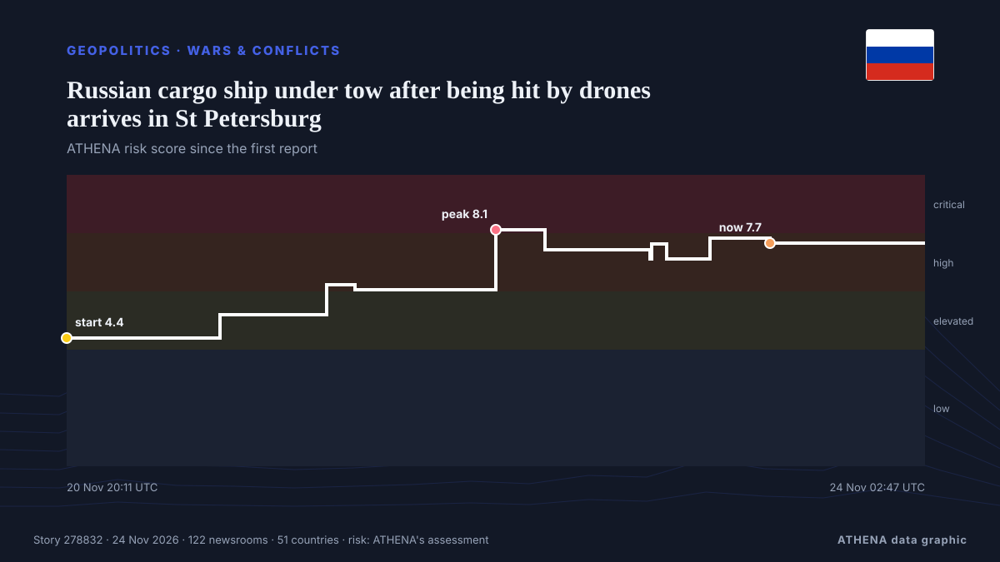

Russian cargo ship under tow after being hit by drones arrives in St Petersburg

A Russian cargo ship under tow after being struck by drones in the Gulf of Finland arrived in St Petersburg on Monday, the regional governor said. από Arab News
Τι άλλαξε 70 νέες αναφορές από 54 μέσα τις τελευταίες 24 ώρες.
Δείτε τις πηγές ›Τεκμήριωση: Επαρκής
Αναφέρθηκε ανεξάρτητα από 122 μέσα σε 51 χώρες από τις 15 Νοε, πρώτο το APA (English)· η κάλυψη εξασθενεί. Το ATHENA εκτιμά τον κίνδυνο υψηλό (7.3/10), κυρίως λόγω της σοβαρότητάς του και της εμβέλειάς του. Βεβαιότητα 87% (υψηλή): το επιβεβαιώνουν 122 ανεξάρτητα μέσα, μέση αξιοπιστία 74%. Μέσα ανά χώρα: Βουλγαρία (8), Ηνωμένες Πολιτείες (8), Τουρκία (5). Κάλυψη: 15 Νοε έως 23 Νοε, 205 ώρες.
Γιατί έχει σημασία: Οι εξελίξεις στην ασφάλεια και τη διπλωματία μπορούν να μετατοπίσουν συμμαχίες, εμπόριο και αγορές πολύ πέρα από τις χώρες που εμπλέκονται.
Τι άλλαξε: 70 νέες αναφορές από 54 μέσα στο 24ωρο έως 24 Νοε.
Πρώτη διατύπωση: Ship carrying 13 Azerbaijani citizens attacked by drone in Black Sea-VIDEO
ΑυτοματοποιημένοΕπιλέχθηκε, ομαδοποιήθηκε και βαθμολογήθηκε με τη δημοσιευμένη μέθοδο της ATHENA από 28 ανεξάρτητα μέσα. Ο τίτλος είναι του μέσου· οι προτάσεις της ATHENA ακολουθούν σταθερά πρότυπα - δεν τις γράφει παραγωγική ΤΝ. Πώς λειτουργεί →
Πώς να διαβάσετε αυτή τη σελίδα
- Τι διαβάζετε
- 122 μέσα σε 51 χώρες ανέφεραν αυτό το γεγονός. Οι αναφορές παρακάτω εμφανίζονται με τη σειρά που δημοσιεύτηκαν· κάθε τίτλος ανοίγει το αρχικό άρθρο. Το ATHENA δεν γράφει δικά του ρεπορτάζ.
- Η εκτίμησή μας
- Υπό παρακολούθηση — Οι αναφορές περιγράφουν ενέργεια ή απόφαση που δεν έχει ακόμη ληφθεί, ανάμεσα σε κράτη ή ένοπλες ομάδες. Το ATHENA παρακολουθεί τι θα συμβεί στη συνέχεια. Αναζητούμε τέσσερα είδη εξέλιξης: καμία περαιτέρω ενέργεια, μια ανοιχτή ενέργεια που κάποιος αναλαμβάνει, μια ενέργεια μέσω τρίτων ή χωρίς ανάληψη ευθύνης, και ένα ατύχημα ή μια παρεξήγηση. Δεν προβλέπουμε ποιο θα συμβεί.
- Πόσα στοιχεία υπάρχουν
- Επαρκής Αρκετά ανεξάρτητα μέσα συμφωνούν, αλλά η εικόνα μπορεί ακόμη να αλλάξει.
Αφού αφαιρεθούν οι επαναλήψεις, τα άσχετα και τα παλιά στοιχεία, υπολογίζονται 16 από τις 39 αναφορές που παρατίθενται· το 51% των τίτλων αντιστοιχεί στο γεγονός.
- Τι δεν σημαίνει
- Το ATHENA μετρά πώς καλύπτεται ένα γεγονός, όχι αν είναι αληθές. Δεν είναι πρόβλεψη, κρίση για το ποιος έχει δίκιο ή συμβουλή.
- Τι θα την άλλαζε
- Αναφορές από άλλα ανεξάρτητα μέσα που δείχνουν διαφορετική εξέλιξη, ή σαφής επιβεβαίωση ή διάψευση από επίσημη πηγή.
Εκτίμηση R2 · ανανεώνεται με κάθε ενημέρωση της σελίδας. Το ATHENA δεν έχει δημοσιεύσει ακόμη ιστορικό επιδόσεων για αυτές τις εκτιμήσεις· όταν το κάνει, θα συνδέεται εδώ.
Με μια ματιά
Επιλέγεται, βαθμολογείται και γράφεται από τη δημοσιευμένη μεθοδολογία του ATHENA. Κανένας συντάκτης δεν παρεμβαίνει σε μεμονωμένα γεγονότα. Πώς παράγεται ›
| 15 Nov 11:14 UTC | 1 |
|---|---|
| 15 Nov 23:14 UTC | 0 |
| 16 Nov 11:14 UTC | 12 |
| 16 Nov 23:14 UTC | 4 |
| 17 Nov 11:14 UTC | 3 |
| 17 Nov 23:14 UTC | 0 |
| 18 Nov 11:14 UTC | 2 |
| 18 Nov 23:14 UTC | 5 |
| 19 Nov 11:14 UTC | 10 |
| 19 Nov 23:14 UTC | 6 |
| 20 Nov 11:14 UTC | 19 |
| 20 Nov 23:14 UTC | 16 |
| 21 Nov 11:14 UTC | 43 |
| 21 Nov 23:14 UTC | 29 |
| 22 Nov 11:14 UTC | 26 |
| 22 Nov 23:14 UTC | 54 |
| 23 Nov 11:14 UTC | 27 |
| 23 Nov 23:14 UTC | 2 |
| 20 Nov 20:11 UTC | 4.4 |
|---|---|
| 21 Nov 10:13 UTC | 5.2 |
| 21 Nov 19:59 UTC | 6.2 |
| 21 Nov 22:36 UTC | 6.1 |
| 22 Nov 11:31 UTC | 8.1 |
| 22 Nov 16:00 UTC | 7.4 |
| 23 Nov 01:35 UTC | 7.1 |
| 23 Nov 01:45 UTC | 7.6 |
| 23 Nov 03:08 UTC | 7.1 |
| 23 Nov 07:04 UTC | 7.8 |
| 23 Nov 12:34 UTC | 7.7 |
| 24 Nov 02:47 UTC | 7.3 |
Γιατί αυτοί οι αριθμοί
Σημασία
Πόσο πολύ και πόσο εμφανώς αναφέρεται η είδηση.
Κίνδυνος
Τι περιγράφουν οι αναφορές, βαθμολογημένο για πιθανή ζημιά. Δεν είναι πρόβλεψη.
Βεβαιότητα
Πόσο καλά την στηρίζουν οι ανεξάρτητες πηγές.
Η κάλυψη — ποιος το ανέφερε και πότε
ο τίτλος όπως δημοσιεύτηκε · ανοίγει το πρωτότυπο- APA (English) · ΑζερμπαϊτζάνShip carrying 13 Azerbaijani citizens attacked by drone in Black Sea-VIDEO
- Novinite · ΒουλγαρίαAll 12 Crew Members Rescued After Cargo Ship Sinks in the Black Sea Near Bulgaria
- Daily Sabah · ΤουρκίαTurkish, Azerbaijani crew rescued after Black Sea ship sinks
- ABC News (International) · Ηνωμένες ΠολιτείεςCargo ship sinks off Bulgaria's Black Sea coast
- Hürriyet Daily News · ΤουρκίαTurkish crew rescued as cargo ship sinks in Black Sea
- NEWS.am (English) · ΑρμενίαCargo ship with Azerbaijani, Turkish crew sinks in Black Sea
- Türkiye Today · ΤουρκίαSea drones hit Turkish-crewed BETUL 8 off Bulgaria, crew says, with all 12 rescued
- Al Jazeera English · ΚατάρCargo ship capsizes off Bulgaria’s Black Sea coast
- MarineLink · Ηνωμένες ΠολιτείεςCargo Ship Offshore Bulgaria Sinks After Drone Strike
- MarineLink · Ηνωμένες ΠολιτείεςCrew Rescued From Capesized Wheat Vessel in Black Sea
- Kyiv Independent · ΟυκρανίαCargo ship sinks in Bulgaria's Black Sea after reported drone attack, all 12 crew rescued
- The Maritime Executive · Ηνωμένες ΠολιτείεςBulgaria Rescues 12 Crew as Attacked Cargo Ship Capsizes
- gCaptain · Ηνωμένες ΠολιτείεςCargo Ship Capsizes Off Bulgaria After Reported Sea Drone Attack
- SeaNews Türkiye · ΤουρκίαTurkish-Owned Bulk Carrier BETUL 8 Sinks Off Bulgaria's Coast, Crew Rescued
- News of Bahrain · ΜπαχρέινBlack Sea Shipping Faces New Drone Threats
- The Sofia Globe · ΒουλγαρίαSecond merchant ship in two days sinks off Bulgaria’s coast after being hit by drones
- Novinite · ΒουλγαρίαNear Bulgaria: All 19 GAS HUSKY Crew Members Rescued
- Marine Insight · Ινδία12 Seafarers Rescued After Somali-Flagged Vessel Capsizes Off Bulgaria Following Drone Strikes
- ABC News (International) · Ηνωμένες ΠολιτείεςAnother commercial vessel sinks off Bulgaria's Black Sea coast
- AzerNews · ΑζερμπαϊτζάνLPG tanker sends distress signal off Bulgaria's Black Sea coast
- UPI World News · Ηνωμένες ΠολιτείεςLook: Wedged dog rescued from between shipping containers in California
- gCaptain · Ηνωμένες ΠολιτείεςCoast Guard Restricts Mississippi River Traffic for Monthlong Cruise Ship Salvage
- SeaNews Türkiye · ΤουρκίαDrone Strikes Cargo Ship LARISSA 1 in Black Sea, Repairs Underway in Turkey
- TASS (English) · ΡωσίαCombat crew of Admiral Kasatonov frigate conducts precision missile strike drills
- ANSA English · ΙταλίαSix-year-old girl missing after migrant boat capsizes off Lampedusa
- ANSA English · ΙταλίαSix-year-old girl missing after migrant boat capsizes off Lampedusa
- Novinite · ΒουλγαρίαBulgaria's PM Calls for Black Sea to Become Zone of Shared Security
- Philippine Daily Inquirer · ΦιλιππίνεςCargo vessel carrying 1,800 tons of soya runs aground off Leyte
- Novinite · ΒουλγαρίαRadev: Bulgaria Cannot Shoot Down Black Sea Drones for Technical Reasons
- Dominican Today · Δομινικανή ΔημοκρατίαCuban cargo vessel runs aground off Puerto Plata coast
- BTA (English) · ΒουλγαρίαGERB Urges PM to Look at Romania's Measures to Protect Black Sea Shipping
- Tuoi Tre News · ΒιετνάμLuxury cruise ship brings 2,300 int’l visitors to southern Vietnam port
- Seatrade Maritime · Ηνωμένο ΒασίλειοSeatrade Maritime Crew Connect Global
- ABC News Australia · ΑυστραλίαMagic the Doberman becomes owner's second dog rescued from mineshaft
- BTA (English) · ΒουλγαρίαBulgaria Has Taken All Possible Measures With Regard to Black Sea Drone Attacks, Prime Minister Says
- Cyprus Shipping News · ΚύπροςGreenland’s scrubber restrictions – Clean Shipping Alliance response
- Novinite · ΒουλγαρίαBlack Sea Drone Attacks: Romania and Turkey Intensify Security Efforts as Bulgaria Holds Back
- TASS (English) · ΡωσίαScientists offer new system to calculate carbon dioxide emissions from vessels in Arctic
- Arab News · Σαουδική ΑραβίαRussian cargo ship under tow after being hit by drones arrives in St Petersburg